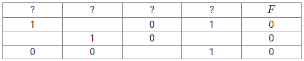

(Тип 1) На рисунке справа схема дорог в парке изображена в виде графа, в таблице содержатся сведения о длинах этих дорог. Так как таблицу и схему рисовали независимо друг от друга, нумерация населённых пунктов в таблице никак не связана с буквенным обозначением на графе. Определите, какова длина маршрута А-И-З-Г-А.
В ответе запишите целое число.
1
(Тип 1) На рисунке схема дорог района изображена в виде графа, в таблице приведены длины дорог между пунктами. Так как таблицу и схему рисовали независимо друг от друга, то нумерация населённых пунктов в таблице никак не связана с буквенными обозначениями на графе. Найдите длину маршрута Д-Е-Г-З-Д. В ответ укажите найденную длину.
1
(Тип 1) На представленной карте метро граф отображает станции в виде вершин и переходы между ними в виде ребер с указанием протяженности в километрах. В таблице представлены данные о протяженности каждого перехода между станциями. Отметим, что нумерация станций в таблице не связана с буквенными обозначениями на графе, так как они были созданы независимо друг от друга. Ваша задача состоит в определении суммарной длины двух переходов: от станции A до станции C и от станции B до станции D.
(Тип 1) В таблице содержатся сведения о дорогах между населёнными пунктами (звёздочка означает, что дорога между соответствующими городами есть).На рисунке справа та же схема дорог изображена в виде графа. Так как таблицу и схему рисовали независимо друг от друга, то нумерация населённых пунктов в таблице никак не связана с буквенными обозначениями на графе. Определите номера населённых пунктов Б и В в таблице. В ответе напишите два числа без разделителей: сначала для пункта Б, затем для пункта В.
(Тип 1) На рисунке изображена схема дорог N-ского района. В таблице звёздочкой обозначено наличие дороги из одного населённого пункта в другой. Отсутствие звёздочки означает, что такой дороги нет. Каждому населённому пункту на схеме соответствует номер в таблице, но неизвестно, какой именно номер. Определите, какие номера в таблице могут соответствовать населённым пунктам A и F на схеме. В ответе запишите эти два номера в возрастающем порядке без пробелов и знаков препинания.
1
(Тип 4) По каналу связи передаются сообщения, содержащие только буквы Д, А, Н, О, В. Для передачи используется двоичный код, удовлетворяющий условию Фано. Кодовые слова для букв известны: Д: 00; А: 111; Н: 100; О: 101; Найдите код минимальной длины для буквы В. Если таких кодов несколько, укажите код с максимальным числовым значением.
1
(Тип 4) По каналу связи передаются шифрованные сообщения, содержащие только четыре буквы: А, Б, В, и Г. Для передачи используется двоичный код, удовлетворяющий условию Фано. Это условие обеспечивает возможность однозначной расшифровки закодированных сообщений. Для трёх букв кодовые слова известны А – 0, Б – 1110, В - 1010.
Укажите кратчайшее кодовое слово для буквы Г, при котором код будет допускать однозначное декодирование. Если таких кодов несколько, укажите код с наибольшим числовым значением.
1
(Тип 4) По каналу связи передаются сообщения, содержащие только буквы из набора: Б, О, Р, Т, Ф, Я. Для передачи используется двоичный код, удовлетворяющий условию Фано. Кодовые слова для некоторых букв известны: Р – 01, Ф – 110. Для четырех оставшихся букв Я, Б, О, Т кодовые слова неизвестны. Какое количество двоичных знаков потребуется для кодирования слова ФОТОРОБОТ, если известно, что оно закодировано минимально возможным количеством двоичных знаков?
1
(Тип 4) Для кодирования некоторой последовательности, состоящей из букв Л, М, Н, П, Р, решили использовать неравномерный двоичный код, удовлетворяющий условию, что никакое кодовое слово не является началом другого кодового слова. Это условие обеспечивает возможность однозначной расшифровки закодированных сообщений.
Для букв Л, М, Н использовали соответственно кодовые слова 00, 01, 11. Для двух оставшихся букв — П и Р — кодовые слова неизвестны. Укажите кратчайшее возможное кодовое слово для буквы П, при котором код будет удовлетворять указанному условию. Если таких кодов несколько, укажите код с наименьшим числовым значением.
1
(Тип 6) Исполнитель Черепаха действует на плоскости с декартовой системой координат. В начальный момент Черепаха находится в начале координат, её голова направлена вдоль положительного направления оси ординат, хвост опущен. При опущенном хвосте Черепаха оставляет на поле след в виде линии. В каждый конкретный момент известно положение исполнителя и направление его движения. У исполнителя существует 5 команд: Поднять хвост, означающая переход к перемещению без рисования; Опустить хвост, означающая переход в режим рисования; Вперёд n (где n – целое число), вызывающая передвижение Черепахи на n единиц в том направлении, куда указывает её голова; Назад n (где n – целое число), вызывающая передвижение в противоположном голове направлении; Направо m (где m – целое число), вызывающая изменение направления движения на m градусов по часовой стрелке, Налево m (где m – целое число), вызывающая изменение направления движения на m градусов против часовой стрелки. Запись Повтори k [Команда1 Команда2 … КомандаS] означает, что последовательность из S команд повторится k раз.
Черепахе был дан для исполнения следующий алгоритм:
Повтори 2 [Вперёд 5 Налево 90 Назад 13 Налево 90]
Поднять хвост
Назад 10 Направо 90 Вперёд 9 Налево 90
Опустить хвост
Повтори 2 [Вперёд 11 Направо 90 Вперёд 7 Направо 90]
Определите, сколько точек с целочисленными координатами будут находиться внутри объединения фигур, ограниченного заданными алгоритмом линиями, включая точки на линиях.
1
(Тип 8) Все 6-буквенные слова, составленные из букв Г, О, Н, Д, У, Б, Ш, записаны в алфавитном порядке и пронумерованы.
Вот начало списка:
1. ББББББ
2. БББББГ
3. БББББД
4. БББББН
5. БББББО
6. БББББУ
...
Под каким номером в списке стоит последнее слово с нечётным номером, которое не начинается с буквы Б, содержит не менее двух букв Н и не содержит букв У?
1
(Тип 7) Прибор автоматической фиксации нарушений правил дорожного движения делает цветные фотографии размером 1920×1080 пикселей, используя палитру из 4096 цветов. Для передачи снимки группируются в пакеты по 68 штук. Определите размер одного пакета фотографий в Кбайт.
В ответе запишите только число.
1
(Тип 2) Логическая функция
F задаётся выражением
(
(
x
∧
(
y
≡
¬
z
)
)
→
w
)
∧
(
z
→
y
)
. На рисунке приведён частично заполненный фрагмент таблицы истинности функции
F, содержащий неповторяющиеся строки. Определите, какому столбцу таблицы истинности соответствует каждая из переменных
w, x, y, z. В ответе напишите буквы
w,x,y,z в том порядке, в котором идут соответствующие им столбцы. Буквы в ответе пишите подряд, никаких разделителей между буквами ставить не нужно.

1
(Тип 4) По каналу связи передаются сообщения, содержащие только буквы из набора: А, К, С, Л, Я. Для передачи используется двоичный код, удовлетворяющий условию Фано. Это условие обеспечивает возможность однозначной расшифровки закодированных сообщений. Кодовое слово буквы С – 01. Для четырёх оставшихся букв А, К, Л и Я кодовые слова неизвестны. Какое минимальное количество двоичных знаков потребуется для кодирования последовательности символов КАЛКАСКА?
1
(Тип 11) В велокроссе участвуют 10000 спортсменов. Специальное устройство регистрирует прохождение каждым из участников промежуточного финиша, записывая его номер с использованием минимально возможного количества бит, одинакового для каждого спортсмена.
Каков информационный объем сообщения (в битах), записанного устройством, после того как промежуточный финиш прошли 68 велосипедистов?